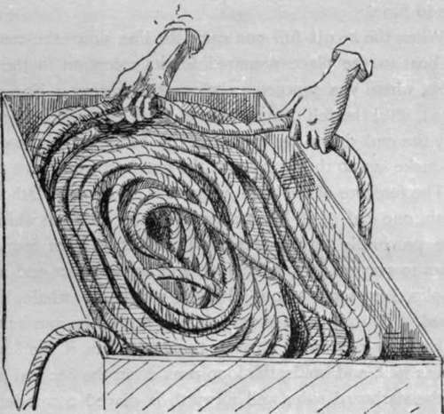

Whaling. Greenland Whale. Balaena Mysticetus. Part 3
Description
This section is from the book "Sea Fishing", by John Bickerdyke. Also available from Amazon: Sea Fishing.
Whaling. Greenland Whale. Balaena Mysticetus. Part 3
Each ship usually carries from seven to eight whaleboats, from 26 to 30 feet long, about 5 ft. 9 in. beam over all, and depth amidships from 28 to 30 inches. These boats have very little keel, and curve slightly up to the stem and stern-post, which, as they rise from the keel, slope outwards. The object of this peculiar build is that the boat may turn quickly to the motions of the whale, and enable the boat-steerer with his long oar to sweep clear of the fish when fastened. On the bows two sheets of copper or zinc are nailed to protect the wood from the ice. In the stem-head is cut a score or notch about three and a half inches deep, by about two and a half inches wide (in fact, sufficiently wide to allow the line, be it two and a half or three-inch stuff, to run freely). From the stem-head a small salvage deck is carried aft for about three feet, and through this two bollard heads (pronounced ' bullet heads' by the Scotch whalers) project.
A bollard head is a piece of round upright lignum vitæ, or other suitable hard wood, from about three inches to, at the outside, five and a half inches diameter. In the foremost bollard head a hole 1 is bored to take the crutch on which the harpoon gun rests. On the port side of the stem a small eye-bolt is screwed, and to this is carried a preventer stay from the crutch of the gun to take some of the recoil of the shot, which, considering that the harpoon and shackle for the attachment of the foregore weighs from eight to twelve pounds, and is driven by from five to six drams of coarse powder, must be very severe. In addition to this, for fear of losing the gun if the crutch and preventer stay give way, there is another line, fastened to the bend of the crutch and carried down through the salvage deck, where it is belayed. This is a very necessary precaution. Crutches do sometimes break, as the writer knows to his own cost.
1 Round the top of the gun bollard head is placed a light iron strop or ring to prevent the wood from splitting when the hole is bored. This ring is put on warm and contracts when it is cold. In the boat which the writer measured when writing this chapter the gun bollard head is placed a little on the port side, 1 ft. 3 in. from outside the score. Boats vary, it is right to say.
The other bollard head is placed about fourteen inches aft of the gun bollard head in the centre of the boat, leaving sufficient space to take round it one, two, and sometimes three turns of the line ; so that as much strain as is safe can be brought to bear on the fish. The line cuts deeply into the bollard head, often leaving a mark as if a red-hot iron had been applied ; indeed, to prevent the wood from catching fire, water has to be poured on it.
On the port side, close to the gun, the foregore tub is bolted. This is simply a wooden tub, about one foot in diameter and six or eight inches in height, containing from ten to twelve fathoms of beautifully made Manila line, which is spliced to the gun harpoon shackle at one end, and either spliced or hitched (according to the ideas of the skipper or harpooneer) to the whale line just outside the score. The bight of the foregore is carefully coiled down Flemish fashion in the tub, so that it will run freely when the harpoon is fired. A whale line measures 120 fathoms, and varies from two and a half to three inches of beautifully made soft laid Europe (or tarred rope), especially manufactured for the purpose. Manila hemp is used, and, I believe, the Americans employ little else. The writer has used both sorts, but decidedly prefers the tarred rope. In a cold climate Manila gets very hard, and takes such turns and twists that it is very troublesome to coil down after you have killed a fish ; indeed, sometimes it has to go overboard and be towed to take the turns out. A great deal of the American whaling is done in warm climates, and it is also quite possible that we cannot get the best Manila over here. Manila has one great advantage —viz. it is much lighter ; a two and a half inch tarred line weighs about 1 cwt. 1 qr., whereas a Manila two and a half inch weighs a little over 1 cwt. The writer does not know whether there is any difference in strength between the two sorts.
Each boat carries five lines, which are spliced together either by a long or a short splice, whichever the skipper approves of most. The advantage of a long splice is that it runs freer, but some harpooneers maintain that it is more likely to draw, and if it becomes necessary to cut lines, or separate them at the end of the voyage, there is a great deal more waste. On the whole, probably the short splice is the best, provided care be taken that it is not left too big to run freely through the score. In the centre of the boat is placed a box to hold part of the lines and the remainder are flaked down in the stern sheets, in a spot prepared for their reception with a painted canvas cover to preserve them from the weather.
We will now proceed to coil the lines in the boat. An eye or loop is spliced on the first line, and a few fathoms of the end of the line are left out of the box. This is called the ' stray line,' and in the frequent event of a fish taking all the lines from the boat to which she is fast, it is passed to another boat, when the harpooneer of the loose boat, detaching his harpoons, bends on the end of his lines to this eye. The harpooneer of the fast boat, when his lines are nearly out, casts the remaining few fathoms overboard, the fast flag is struck on the first boat (which then becomes a loose boat), raised on the second boat, and the harpooneers change boats.
The harpooneer who first fastened the fish changes from boat to boat as the different boats' lines are attached and taken out, until the fish is either killed or lost. Whales sometimes run out a great quantity of line, particularly if they take to the ice, where the boat is unable to follow them, in which case the vessel will perhaps come up and the lines will be brought on board. Fish have been known to tow the ship and boats at the rate of two or three miles an hour.
Coiling Line.
Continue to:
- prev: Whaling. Greenland Whale. Balaena Mysticetus. Part 2
- Table of Contents
- next: Whaling. Greenland Whale. Balaena Mysticetus. Part 4
Tags
fishing, hooks, bait, fishermen, spanish mackerel, mackerel fishing